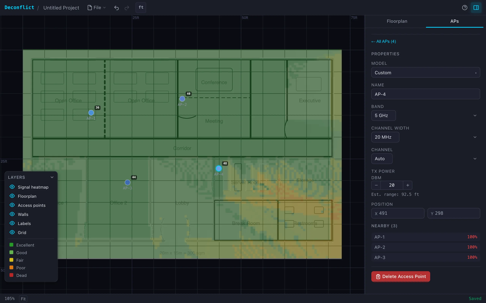

WiFi works until it doesn't. You add a second access point and suddenly both are slower. The problem is almost always channel conflict: two APs close enough to interfere, broadcasting on the same or overlapping frequencies. Enterprise tools solve this with controllers that cost thousands. Deconflict does it in the browser for free. Upload a floorplan, drop access points where you want them, and the app assigns channels automatically using graph coloring.

.svg){kind=link}
Channel assignment as graph coloring
The channel assignment problem maps directly to graph coloring. Each AP is a node. If two APs are close enough to interfere (their coverage radii overlap), they share an edge. Assigning channels so no adjacent nodes share a color is the classic vertex coloring problem. The solver uses DSatur (Degree of Saturation), which picks the most constrained node first, assigns it the lowest available channel, and repeats. For WiFi planning this works well because the densest clusters get colored first, and DSatur typically finds near-optimal solutions in under 5 milliseconds.
The app also ships with three alternative algorithms for comparison: Welsh-Powell (sorts by degree), greedy (simplest possible), and backtracking (finds the true minimum chromatic number but is slower). All four run in a Web Worker so the canvas stays responsive. The solver re-runs automatically every time you add, move, or remove an AP.

{kind=link}
Signal heatmap
The heatmap renders to an offscreen canvas in 8-pixel cells. For each cell, the renderer finds the nearest AP, calculates signal strength based on distance, and checks line-of-sight by counting wall crossings. Each wall attenuates the signal by 5 dB. The result maps to five color bands: dark red for dead zones, red for poor, orange for fair, yellow for good, and green for excellent coverage. The heatmap recalculates whenever you move an AP or toggle it with the H key.
Wall detection works automatically. When you upload a floorplan image, the app runs Zhang-Suen thinning to extract a skeleton of the walls, then recovers wall thickness by scanning perpendicular to each skeleton line. The boundary detection finds the building outline using edge pixels and a convex hull. Walls that the algorithm misses can be drawn manually.
The RF model
The app covers all three consumer WiFi bands: 2.4 GHz (channels 1-13), 5 GHz (UNII-1 through UNII-3, with DFS channel flags), and 6 GHz (channels 1-233, with preferred scanning channel subsets). Channel widths range from 20 MHz up to 320 MHz on 6 GHz. Each combination has a base throughput estimate assuming WiFi 6 at 50% MAC efficiency. Co-channel contention reduces throughput proportionally: if two APs share a channel and overlap by 30%, the effective rate drops accordingly.
The model is simplified on purpose. Real RF propagation depends on wall material, furniture, reflection paths, and antenna patterns. Deconflict uses constant wall attenuation and free-space path loss because the goal is channel planning, not site survey accuracy. The heatmap tells you "this corner has weak coverage" and "these two APs are conflicting," which is what you need to decide where to put the next AP.
Implementation
The frontend is Svelte 5 with SvelteKit, rendering to HTML5 Canvas with a custom layered engine (floorplan, walls, heatmap, APs, selection UI). The canvas uses matrix transforms for pan and zoom, redraws on a dirty flag to avoid unnecessary frames, and scales for retina displays. State auto-saves to localStorage every two seconds with undo/redo support.
The codebase is a monorepo managed by pnpm and Turborepo. The solver, geometry, and channel packages are separate TypeScript libraries with their own test suites. The app builds to static files via SvelteKit's static adapter and deploys to Cloudflare Pages. A service worker enables offline use and PWA installation.